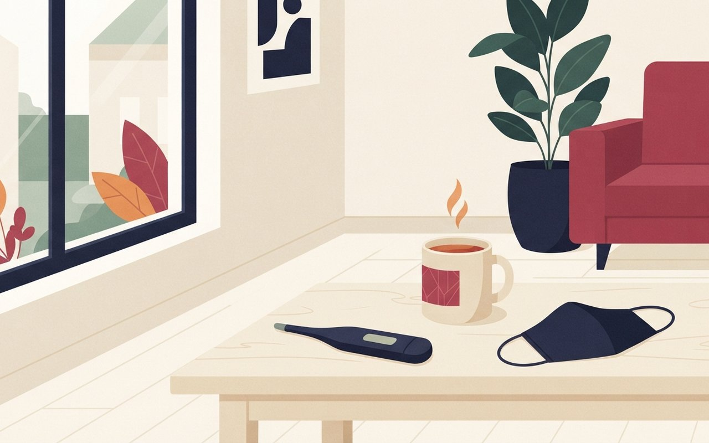
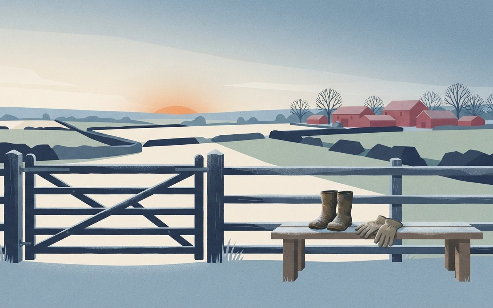
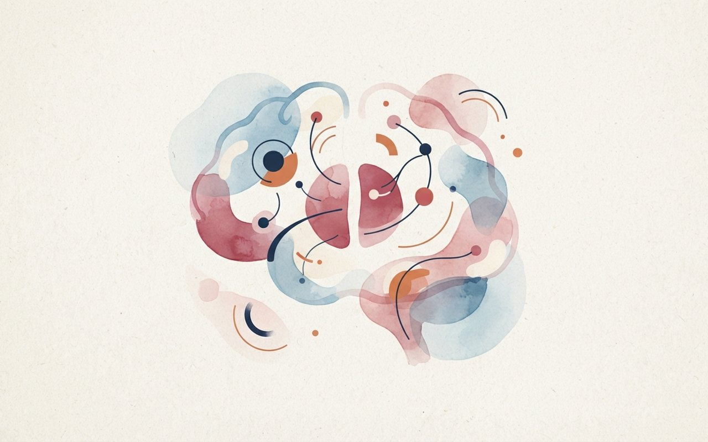

🎧 낭독 원고 보기
11월 10일 화요일, 헬스 브리프입니다.
독감 의사환자가 44주차 외래 1,000명당 22.8명으로 2주 연속 늘었습니다. 병원급 입원환자는 461명으로 전년 같은 기간의 2배 이상이고, 7세부터 12세는 60.9명으로 가장 많습니다. 예방접종률은 65세 이상 71.1%, 어린이 56.1%입니다.
털진드기 발생밀도가 44주차에 전 주보다 150% 늘었습니다. 지수는 0.18에서 0.45로 2.5배가 됐고, 질병청은 풀밭 활동 전에 예방수칙을 지켜 달라고 당부했습니다. 환자 수는 이 자료에 없었습니다.
나이지리아에서 에볼라 확진 사례가 확인돼 11월 9일부터 중점검역관리지역에 추가됐습니다. 한국 입국 사례가 아니라 나이지리아 내 사례이고, 최근 21일 이내 체류·경유 입국자는 건강상태를 신고해야 합니다. 질병청장은 국내 유입 가능성은 낮다고 밝혔습니다.
경기 연천 가금농장에서 11월 4일 고병원성 AI가 확인됐습니다. 국내 인체감염 사례는 없고, 농장 종사자는 노출 뒤 10일간 모니터링합니다.
스웨덴 70세 여성 352명을 5년 추적한 연구에서 폐경 호르몬 치료를 받은 여성은 뇌 소혈관질환 부담이 낮은 연관이 관찰됐습니다. 관찰 연구라 인과는 확정되지 않았고, 치료 결정은 의료진과 상담해야 합니다.
이상 헬스 브리프였습니다. 진단·처방이 아니며, 증상이 있으면 의료진과 상담하세요.
感
독감 유행
독감 2주 연속 증가 — 44주차 외래 1,000명당 22.8명, 입원 461명은 전년의 2배 이상
질병관리청 보도자료(11월 6일)에 따르면 44주차(10월 25~31일) 독감 의사환자 분율은 외래 1,000명당 22.8명으로 43주 19.2명보다 늘어 2주 연속 증가했다. 연령별로는 7~12세가 60.9명으로 가장 많고 13~18세 37.4명, 1~6세 33.1명 순이다.
표본감시 병원급 입원환자는 461명으로 전년 같은 기간 174명의 2배 이상이고 65세 이상이 64.9%다. 인플루엔자 양성 사망 신고는 21건(전년 동기 4건)인데, 확진 이력이 있는 사망을 센 것이라 직접 사인인지는 불명확하다고 본문에 있다. 예방접종률은 65세 이상 71.1%, 어린이(6개월~14세) 56.1%다(11월 5일 18시 기준).
- 44주차외래 1,000명당 22.8명 · 2주 연속 증가(43주 19.2명)
- 7~12세1,000명당 60.9명 · 연령별 최다
- 입원461명 · 전년 동기 174명 · 65세 이상 64.9%
- 사망 신고21건(전년 동기 4건) · 직접 사인 불명확
- 접종률65세 이상 71.1% · 어린이 56.1%
🩺 알고 보면 달라지는 것
증가 속도와 입원이 전년보다 두드러진다는 점이 이번 주 달라진 숫자다. 초등학생 자녀나 65세 이상 가족이 아직 접종 전이라면 접종 여부를 확인해 볼 만하다. 이 카드는 진단·처방이 아니며, 증상이 있으면 의료진과 상담하세요.
질병청 11/6 — 44주 독감 감시
22.8명·연령별·입원 461명·사망 신고 21건·접종률은 질병청 보도자료(11/6, 최종수정 11/5) 단일 출처 · 43주 19.2명은 지난주 브리프 값 · 45주 수치는 11/12~13경 공개 예정 (확인 2026-11-10)
독감 2주 연속 증가,
입원은 전년 2배↑
44주차 독감 의사환자는 외래 1,000명당 22.8명으로, 43주(19.2명)보다 늘어 2주 연속 증가했어요. 입원은 461명으로 전년 174명의 2배 이상이에요.
43주 외래 1,000명당:19.2|44주 외래 1,000명당:22.8
461명|병원급 입원환자(전년 174명)
22.8명|44주차 외래 1,000명당
A bright living room table with a thermometer, a cup of warm tea and a folded face mask beside a window, flat illustration, no people, no text, no numbers, no logos

蟲
쯔쯔가무시
털진드기 밀도 1주 새 150% 증가 — 쯔쯔가무시 환자 늘기 전 예방수칙 당부
질병관리청 보도자료(11월 6일)에 따르면 44주차(10월 22~28일) 털진드기 발생밀도가 전 주차 대비 150% 증가했다. 지수는 0.18에서 0.45로 2.5배가 됐다.
이 자료에는 주차별 환자 수가 없어 환자가 얼마나 늘었는지는 확인하지 못했다. 질병청은 풀밭·야외 활동 전에 예방수칙을 지켜 달라고 당부했다.
- 기간44주차(10월 22~28일)
- 밀도 증가전 주차 대비 150%
- 지수0.18 → 0.45 (2.5배)
- 환자 수이 자료에 없음
🩺 알고 보면 달라지는 것
단풍철 성묘·등산 같은 풀밭 활동이 많은 시기에 진드기 밀도가 오른다는 점이 포인트다. 긴 옷·장갑 착용과 활동 뒤 샤워·옷 세탁 같은 질병청 예방수칙을 확인해 볼 만하다. 이 카드는 진단·처방이 아니며, 활동 뒤 발열·발진이 있으면 의료진과 상담하세요.
질병청 11/6 — 털진드기 밀도
밀도 150% 증가·지수 0.18→0.45는 질병청 보도자료(11/6) 단일 출처 · 환자 수·잠복기 등은 본문에서 확인하지 못해 싣지 않음 (확인 2026-11-10)
털진드기 밀도,
1주 새 150% 증가
44주차 털진드기 발생밀도가 전 주보다 150% 늘었어요. 지수는 0.18에서 0.45로 2.5배예요. 풀밭에 가기 전 예방수칙을 확인하세요.
0.18|2.5배|0.45
0.45|털진드기 지수(전 주 0.18)
A tidy hiking trail edge with long grass, a pair of boots and a folded long-sleeve shirt on a log, autumn light, flat illustration, no people, no text, no numbers, no logos
檢
해외 감염병
나이지리아에서 에볼라 확진 확인 — 11월 9일부터 중점검역관리지역에 추가, 13개국
질병관리청 보도자료(11월 6일)에 따르면 우간다에서 에티오피아 아디스아바바를 거쳐 나이지리아에 입국한 사람이 10월 3일 입국, 7일 증상, 20일 확진 판정을 받았다. 한국 입국 사례가 아니라 나이지리아 내 확진 사례이며, 의료종사자·보호자 등 접촉자 62명을 10월 29일 기준 추적 중이다.
이에 따라 11월 9일부터 나이지리아가 중점검역관리지역에 추가돼 지정 국가는 13개국이 됐다. 최근 21일 이내 체류·경유 입국자는 Q-CODE 또는 건강상태질문서로 신고해야 한다. 임승관 질병청장은 국내 유입 가능성은 낮다고 평가했다.
- 경과10/3 입국 · 10/7 증상 · 10/20 확진(나이지리아)
- 접촉자62명 추적 중(10/29 기준)
- 검역11/9부터 나이지리아 추가 · 13개국
- 입국 시최근 21일 내 체류·경유자 건강상태 신고
- 의심 증상입국 후 발열·복통 등은 1339 또는 보건소
🩺 알고 보면 달라지는 것
해당 국가를 다녀왔거나 갈 계획이 있다면 입국 때 신고 대상이라는 점이 달라졌다. 잠복기는 21일이고, 입국 후 발열·복통 같은 증상이 생기면 즉시 1339 또는 보건소에 신고하라는 것이 질병청 안내다. 이 카드는 진단·처방이 아니며, 증상이 있으면 의료진과 상담하세요.
질병청 11/6 — 검역 강화 머니투데이 11/6 — 확진 경과
경과·접촉자 62명·11/9 지정·13개국·신고 안내·청장 발언은 질병청 보도자료(11/6) · 확진 경과는 머니투데이(11/6)도 같은 내용 · 13개국 수는 질병청 목록 기준 · 한국 내 확진 사례는 아님 (확인 2026-11-10)
에볼라 나이지리아 확진,
검역 대상에 추가
나이지리아 에볼라 확진 사례가 확인돼 11월 9일부터 중점검역관리지역이 13개국으로 늘었어요. 최근 21일 내 체류·경유 입국자는 건강상태를 신고해야 해요.
11/9~|검역 지정 시작
13개국|중점검역관리지역
A quiet airport arrival hall with a health information desk and a rolling suitcase, soft daylight, flat illustration, no people, no text, no numbers, no logos
鳥
조류인플루엔자
올겨울 첫 가금농장 고병원성 AI — 경기 연천 확진, 국내 인체감염 사례 없어
질병관리청 보도참고자료(11월 5일)에 따르면 경기 연천군 가금농장에서 11월 4일 고병원성 AI가 확인돼 살처분했다. 26/27절기 가금농장 첫 발생이다. 국내 인체감염 사례는 없고 농장 종사자 중 의심 증상자도 없다.
질병청은 농장 종사자·살처분 참여자의 보호구 착용과 계절독감 접종 여부를 점검했고, 노출 뒤 10일간 모니터링한다. 작업 후 10일 이내 호흡기 증상이나 결막충혈이 생기면 보건소에 신고하라고 안내했다.
- 발생11/4 경기 연천군 가금농장 · 살처분
- 의미26/27절기 가금농장 첫 발생
- 인체감염국내 사례 없음 · 의심 증상자 없음
- 관리노출 후 10일 모니터링
- 신고작업 후 10일 내 호흡기 증상·결막충혈 시 보건소
🩺 알고 보면 달라지는 것
농장 종사자·살처분 참여자에게 해당하는 안내라는 점이 핵심이다. 질병청은 올겨울 야생 조류·야생 포유류(삵)에서도 이미 검출됐다고 밝혔다. 이 카드는 진단·처방이 아니며, 증상이 있으면 의료진과 상담하세요.
질병청 11/5 — AI 인체감염 대응
연천 확진·인체감염 없음·종사자 점검·10일 모니터링·신고 안내는 질병청 보도참고자료(11/5) 단일 출처 · 아형·축종은 본문에 없어 싣지 않음 (확인 2026-11-10)
올겨울 첫 가금농장
AI, 인체감염은 없어
경기 연천 가금농장에서 11월 4일 고병원성 AI가 확인됐어요. 국내 인체감염 사례는 없고, 종사자는 노출 뒤 10일간 모니터링해요.
10일|노출 후 모니터링
A frosty countryside farm gate at dawn with a pair of work boots and gloves on a bench, cold blue light, flat illustration, no people, no text, no numbers, no logos

研
폐경 호르몬 연구
폐경 호르몬 치료 받은 70세 여성, 뇌 소혈관질환 부담 낮은 연관 — 스웨덴 352명 관찰 연구
하이닥(11월 8일)이 전한 Neurology 11월호 연구는 스웨덴 예테보리 H70-1944 출생 코호트에서 인지기능 저하가 없는 70세 여성 352명의 뇌 MRI를 찍고 5년간 추적했다. 생식 기간이 길수록 뇌 소혈관질환 부담이 낮았고(오즈비 0.90), 폐경 호르몬 치료를 받은 여성은 오즈비 0.43이었다.
관찰 연구라 인과관계는 확정되지 않았고, 치료를 임의로 시작하거나 바꾸는 근거로 쓰면 안 된다고 기사는 밝혔다. 표본이 352명으로 작은 단일 코호트이며, 장기 효과는 추가 확인이 필요하다. Neurology 원문은 확인하지 못했다.
- 대상스웨덴 70세 여성 352명(인지저하 없음)
- 방법뇌 MRI + 5년 추적
- 생식 기간길수록 소혈관질환 부담 낮음 · 오즈비 0.90
- 호르몬 치료 경험오즈비 0.43
- 한계관찰 연구 · 인과 미확정 · 단일 코호트
🩺 알고 보면 달라지는 것
호르몬 치료가 뇌를 지킨다는 결론이 아니라 연관이 관찰됐다는 단계다. 폐경 호르몬 치료는 개인 위험·이득이 달라 스스로 시작하거나 중단하지 말고 담당 의료진과 상담해야 한다. 이 카드는 진단·처방이 아니며, 증상이 있으면 의료진과 상담하세요.
하이닥 11/8 — 연구 소개
대상 352명·추적 5년·오즈비 0.90/0.43·한계는 하이닥(11/8 18:25) 단일 기사 · 학술지 원문 미확인 · 국내 주요 매체 2차 출처 없음 (확인 2026-11-10)
폐경 호르몬 치료와 뇌,
연관만 관찰됐어요
스웨덴 70세 여성 352명을 5년 추적한 연구예요. 호르몬 치료를 받은 여성은 뇌 소혈관질환 부담이 낮은 연관이 있었지만 인과는 확정되지 않았어요.
352명|스웨덴 70세 여성 · 관찰 연구
연관 ≠ 인과|치료 결정은 의료진과
An abstract soft illustration of a brain outline made of gentle blue and pink watercolor shapes, conceptual schematic, not a medical image, flat illustration, no people, no text, no numbers, no logos
